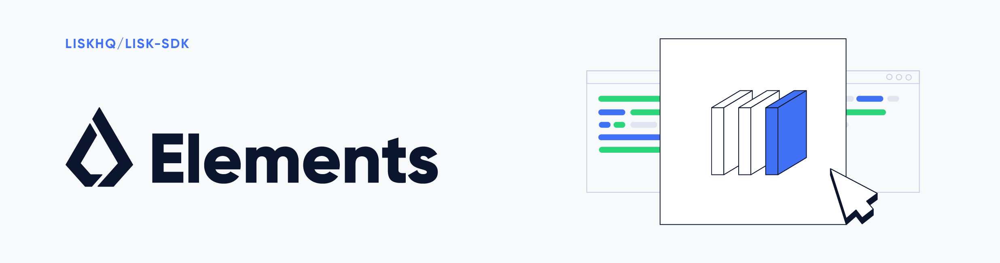

What is Lisk Elements?

Lisk Elements is a collection of JavaScript libraries, each tackling a certain topic of blockchain and Lisk-related functionalities.
Package list
Used in frontend
| Name | NPM | Specification |
|---|---|---|
Client |
|
The
|
Setup
Dependencies
The following dependencies need to be installed to run the Lisk SDK:
| Dependencies | Version |
|---|---|
Node.js |
v16.15.0 |
Pre-installation
Lisk Elements requires Node.js as the underlying engine for code execution. This document describes how to install Node.js and NPM for installation via NPM.
Install node
Follow the instructions for your operating system on the Node.js downloads page.
| NPM is automatically installed along with Node.js. |
Installation
This section details how to install Lisk Elements for a given distribution.
| As all packages in Lisk Elements are independent from each other, they can be installed seperately. |
Installation via NPM
To install the latest version of Lisk Elements for use as a dependency in a Node.js project, please proceed with the following:
Complete library
# Complete Lisk SDK
npm install lisk-sdk
# Lisk Elements packages only
npm install lisk-elements
# Frontend related packages only
npm install @liskhq/lisk-clientSpecific package
npm install @liskhq/<package-name> (1)| 1 | <package-name> can be any of the packages in Lisk Elements. |
Upon successful completion, NPM will add the Lisk Elements package to your package.json file.
Load via CDN (Content Delivery Network)
Include the script below using the following HTML. The lisk variable will be exposed.
Client library
<script src="https://js.lisk.com/lisk-client-5.2.1.js"></script>Or minified:
<script src="https://js.lisk.com/lisk-client-5.2.1.min.js"></script>To include other packages of Lisk Elements, replace lisk-client with any of the packages of Lisk Elements.
Usage
Node.js
Simply import, (or require) the package and access its functionality according to the relevant namespace.
Example with the client package:
import lisk from '@liskhq/lisk-client';
//or
const lisk = require('@liskhq/lisk-client');Browser
Load the Lisk Elements script via the CDN.
For example, to load the minified version 5.2.1 of Lisk Elements, include the following script which will then expose the lisk variable:
<script src="https://js.lisk.com/lisk-client-5.2.1.min.js"></script>
<script>
const api = lisk.apiClient.createWSClient('ws://localhost:8080/ws');
</script>